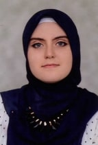

My CV
Emina Fajic
emina_fajic@yahoo.com
035/542-428
062/880-638
Poljice Donje bb, 75303 Lukavac, Tuzla

Work Experience
- July 2019-August 2019
- Internship/Web Developer at Imel d.o.o., Lukavac
- June 2018-September 2018
- Volunteer at Center For Children with Autism "Mali Svijet", Lukavac
- 2012-2016
- Behram-begova Medresa, Tuzla
- 2016-2020
- International University of Sarajevo, Electrical Engineering and Electronics
PERSONAL SKILLS
Mother tongue(s)
Bosnian
Other Languages
| UNDERSTANDING |
SPEAKING |
WRITING |
| Language |
Listening |
Reading |
Spoken interaction |
Spoken production |
|
| English |
C2 |
C2 |
C2 |
C2 |
Turkish |
A2 |
A2 |
A2 |
A2 |
Communication Skills
- Good communication skills gained through studying and working in groups
- Good reporting and presenting skills gained through the university projects and presentations
| Computer Skills |
|---|
| Microsoft Word |
Power Point |
Excel |
Lyx |
| Advanced |
Advanced |
Intermediate |
Basic |